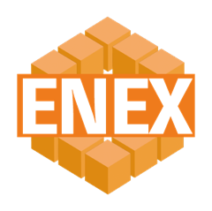

株式会社エネックス業種を問わず、多くの会社は自社のやり方を表計算に落とし込んで仕事を回しています。その表こそが、御社の業務そのものです。当社はその表を土台に、確立した仕組みを足して組み立てます。一から作り直さないので、現場のやり方を変えずに、早く、無理なく導入できます。
入力された取引はすべて集め、分類し、使える情報に整えておきます。必要な時に、必要な形式で、必要な条件に合わせて取り出せる。それが当社の考える基幹システムです。
入力された
すべての取引
取引先・期間・
種類ごとに
台帳・帳票・
集計表に
必要な時に
必要な形で
業務の発注・受注、商品の発注・納品を、いつもの表に入力するだけで記録します。
入庫・出庫で在庫が自動で増減。棚卸の実数合わせと、その変更の記録も残ります。
発注書・納品書・請求書（納品明細つき）を、入力した内容からそのまま作成します。
入金と出金を記録し、銀行の入金データとの照合（消し込み）や相殺もまとめて管理します。
お使いの会計ソフトや会計事務所が求める形式で、データを出力します。
導入の費用は、事務の人件費を削って取り戻すものではありません。転記や集計、締めの作業をシステムが引き受け、空いた時間で事務の方が営業の補佐に回る。営業は外回りと新規開拓に集中できる。今いる人のまま、販売の力を強くすることで投資を取り戻します。
伝票の転記、取引先ごとの集計、月末の締めに追われる毎日。
発注書や納品書の作成、商品の手配で事務所に縛られる。
転記・集計・締めはシステムへ。発注書・納品書の作成や商品の手配を営業に代わって行う。
外回りと新規開拓に時間を使い、売上をつくる仕事に集中できる。
大企業向けの重い仕組みは、開発にも運用にも大きな費用がかかります。当社は、同時に入力する方が20名程度までの会社に合わせて割り切って設計しています。だから、中小企業が大企業並みの導入費用を負担する必要はありません。会社の形に合わせて、3つの導入方法からお選びいただけます。
支払の振り分けだけ、請求書の作成だけなど、今いちばん困っている業務から始めます。
受発注から帳票・帳簿・会計データ出力までを一つにつなぐ、基本の形です。
本社のシステムを中心に、営業所ごとの小さなシステムを足していきます。業務の体系を調べたうえでご提案します。
いきなりAIを入れるのではなく、まず業務を仕組みで整え、その記録からAIに任せられる仕事を見極めます。うまくいかなかった例も含めて学び、任せても問題のない仕事だけをAIへ移していきます。
業務の流れが、すべて記録として残る仕組みをつくる。
日々の記録から、AIが業務の流れとパターンを学ぶ。
失敗の傾向も分析し、任せてよい仕事かを判断する。
見極めが済んだ仕事から、順にAIへ任せる。
届いた書類を読み取ってデータにし、必要な値を入力。
受注・仕入れの手配に伴う書類を自動で作成。
取引先ごとの集計と明細の積み上げ。
明細から請求書を作成。メール送信もオプションで。
AIは導入時から組み込むことも、後から加えることもできます。後から加える場合の目安は、追加構築 20万円程度から、運用費 月5,000円程度からです（規模により異なります）。最初から組み込めば、導入した日から記録がたまり、AIに任せられるまでの期間が短くなります。
数年後、会社をどうしたいか。
必要な業務だけか、1拠点か、営業所ごとか。
AIを最初から入れるか、後から加えるか。
どこまで御社の業務に合わせて作り込むか。
ご予算に合わせて、この4つを一緒に決めていきます。導入は次の順で進めます。